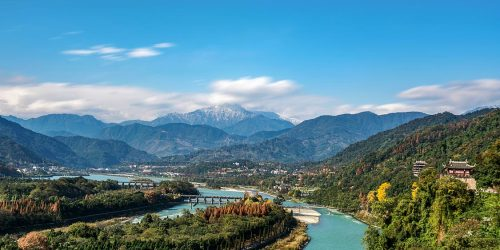

图片：高德地图 POI10.01｜水利千年，蓝眼泪入夜
都江堰站 → 钟书阁 → 都江堰景区 → 南桥夜景
12:30
都江堰站集合
四人到齐后再出发；将大件行李先送到南桥 / 离堆公园附近酒店。若尚未到齐，先到酒店集合比在车站久等更舒服。
13:15
钟书阁（融创茂店）
镜面穹顶与阶梯书墙适合广角拍摄。空间不大，控制在 45—60 分钟；先拍中轴对称，再逛文创，避免影响读者。
14:15
前往都江堰景区
四人直接网约车最省时。地图基准 11.0 km / 30 分钟；国庆按 45—60 分钟，并在车上简单补给。
15:15
都江堰精华线
秦堰楼 / 二王庙 → 安澜索桥 → 鱼嘴 → 飞沙堰 → 宝瓶口 → 伏龙观 → 南门。尽量采用“高处进、南门出”，少走回头路。
18:20
灌县古城晚餐
不追网红单店，选择翻台快、明厨亮灶的川菜馆。四人可点：葱葱卷、甜水面、白果炖鸡或青城老腊肉，加两道不辣菜。
20:00
南桥与仰天窝夜游
南桥河水灯光常被称为“蓝眼泪”，沿江散步至仰天窝广场看自拍熊猫。夜景受水位、天气与亮灯安排影响，不保证固定效果。
晚到降级方案
- 14:00 后到齐：取消钟书阁，直接酒店寄存 → 都江堰景区。
- 16:00 后才到：不再进景区，改灌县古城 + 南桥夜游，避免买票后匆忙。
首日必带
- 身份证原件、轻便雨衣、充电宝。
- 南桥边拥挤且临水，不要在桥中央停留拍大合照。